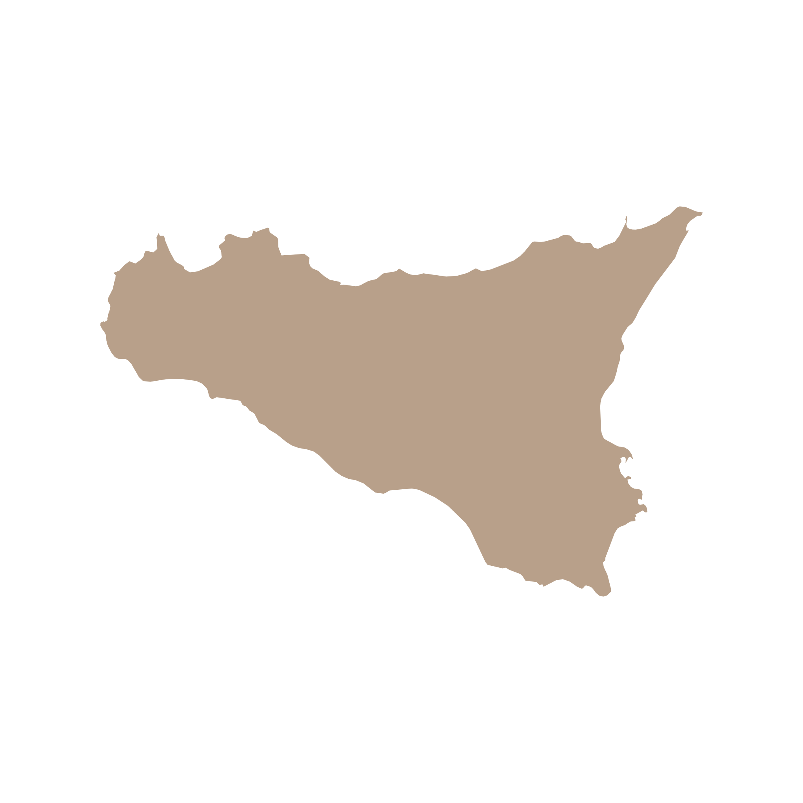

#000002 · Sicilia
Geografische Küstenlinie aus Natural Earth · noch nicht visuell geprüft · kein Höhenrelief, keine NFT-Freigabe.

Coastline candidate · awaiting GIS import verification
Nächster Schritt: verlässliches digitales Höhenmodell einschließlich Ätna und Soft-Stone-Rendering.
Zur ISLANDS-App